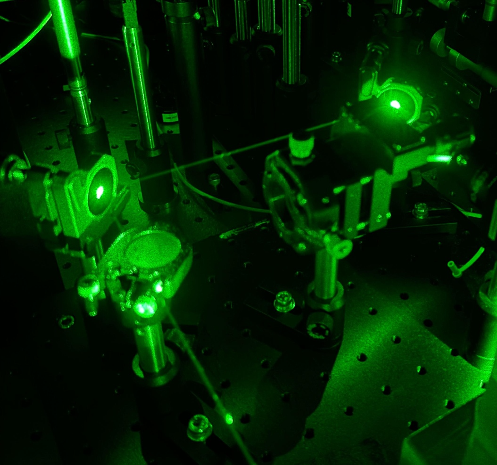

Quantum Network and Sensing
Light and Matter Physics Division, Raman Research Institute, Bengaluru
Two coherent point sources interfering. Move your pointer to shift one of them.
About Quantum Network and Sensing Lab
Quantum optics studies light at its fundamental limit. By controlling and detecting individual photons, we can harness quantum entanglement to drive new technologies in secure communication, computing, and sensing. The Quantum Network and Sensing Lab utilizes these engineered photon states to advance quantum networks, microscopy, and imaging.

We are in RRI Bengaluru
The Raman Research Institute (RRI), an autonomous institute funded by the Government of India, is a premier center dedicated to research in the basic sciences. Further information about the Institute, its research areas, and other details may be found through the link below.
MoreContact us
Dr. Tanmoy Chakraborty,
Associate Professor,
Light and Matter Physics Division,
Raman Research Institute,
- Address
- C. V. Raman Avenue, Sadashivanagar,
Bengaluru - 560 080 India. - tanmoy@rri.res.in